Shinhidaka
Shinhidaka · Hokkaido
Shinhidaka
Highlighted on the Hokkaido map.
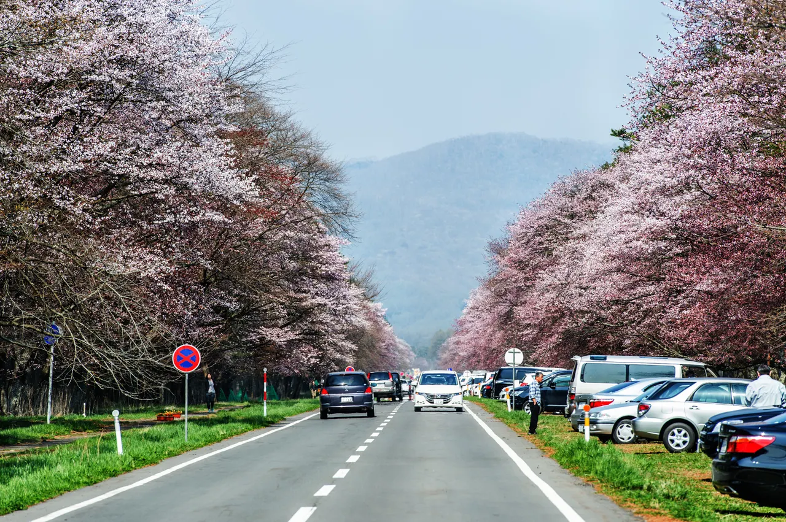
Stay
静内エクリプスホテル
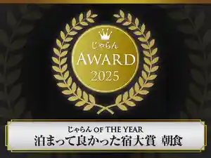
Shizunai Ekuripusuhoteru
ホテルローレル
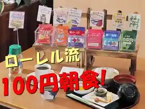
Hoterurooreru
ビジネスホテルサンスポット
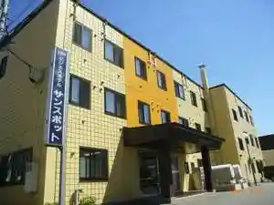
Bijinesuhoterusansupotto
静内シティホテル
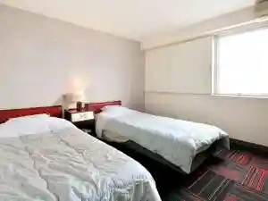
Shizunai Shiteihoteru
ホテル アネックス イン
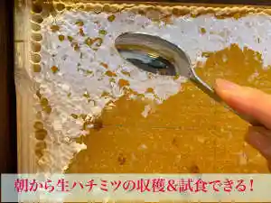
Hoteru Anekkusu In
ホテル サトウ
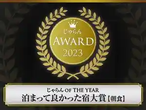
Hoteru Satou
グランピングガーデン日高 鹿の郷
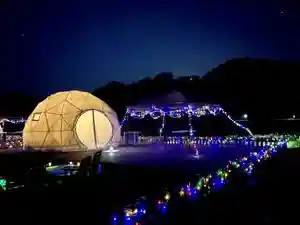
Guranpingugaaden Hidaka Shika No Sato
みついし昆布温泉 蔵三
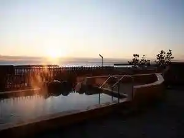
Mitsuishi Konbu Onsen Kura San
Dining
いろはにほへと 静内店

Irohanihoheto Shizunai Mise
串や
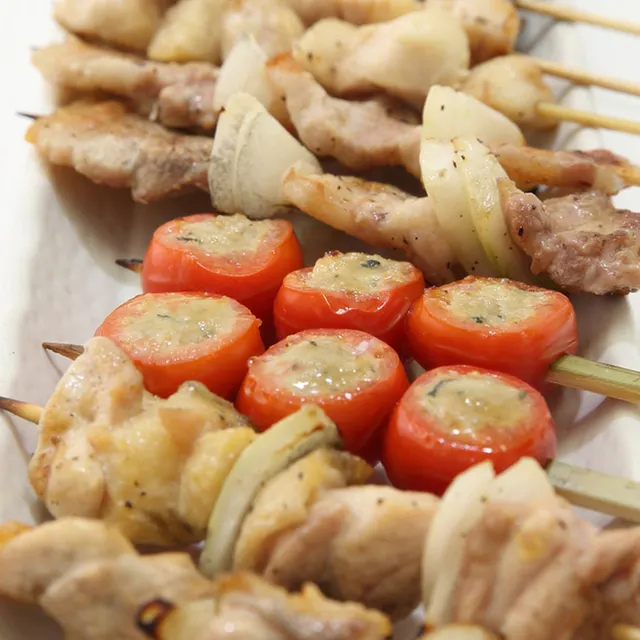
Kushi Ya
白川商店
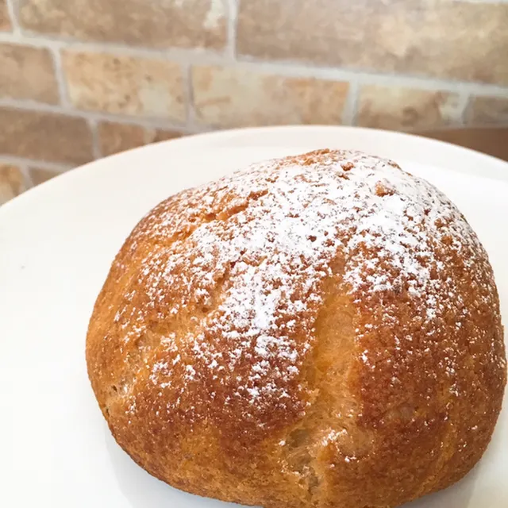
Shirakawa Shouten
syzygy cafe
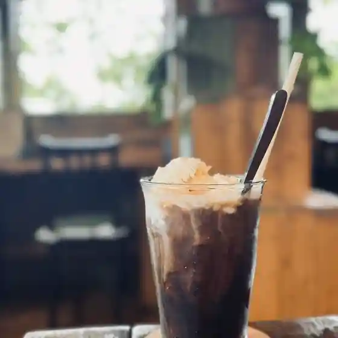
Syzygy Cafe
こむぎ工房 茶飛
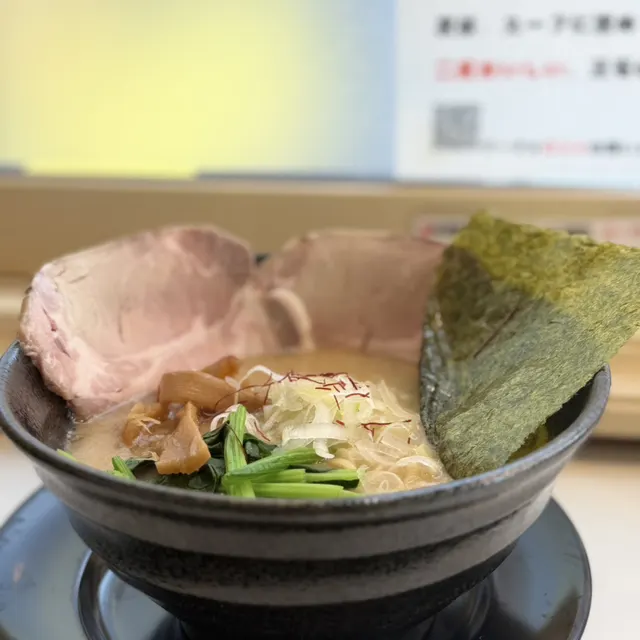
Komugi Koubou Cha Hi
きのした
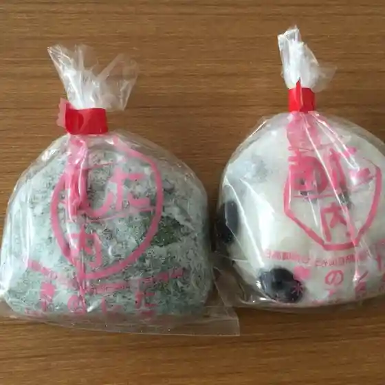
Kinoshita
ラーメン飯店 ききょうKEN
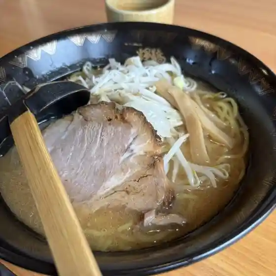
Raamen Hanten Kikyou Ken
回転寿司ちょいす 静内店
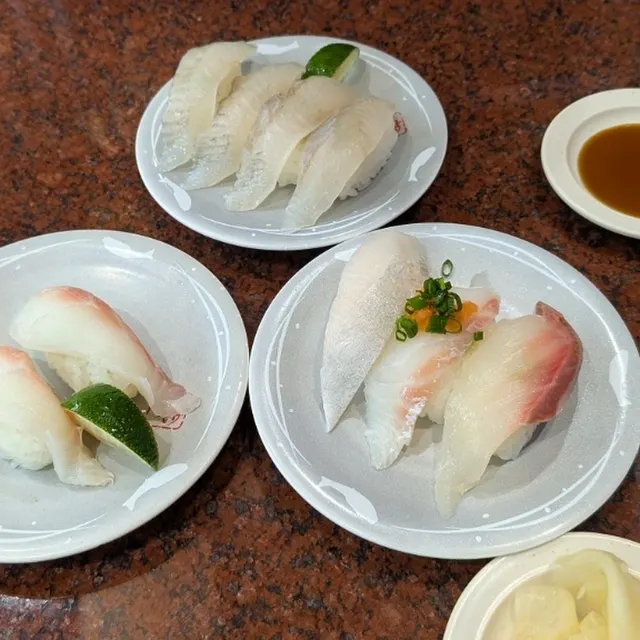
Kaitenzushi Choisu Shizunai Mise
ひだか漁協三石特産品販売センター
Hidaka Gyokyou Mitsuishi Tokusanhin Hanbai Sentaa
炭火焼肉 韓や
Sumibi Yakiniku Kan Ya
ぽっぽ
Poppo
蕎麦工房 春風
Soba Koubou Harukaze
くまのフライパン
Kumano Furaipan
居酒屋 蔵や
Izakaya Kura Ya
春香園
Haruka Sono
居酒屋漁
Izakaya Ryou
麺屋 焼肉 藍
Men Ya Yakiniku Ai
Patisserie Noire
Patisserie Noire
食事処 さつま屋
Shokuji Tokoro Satsuma Ya
セイコーマート 静内緑町店
Seikoomaato Shizunai Midorimachi Mise
サンスポット
Sansupotto
栗乃木
Kuri Nogi
喫茶我夢
Kissa Ware Yume
マルフク池田水産
Marufuku Ikeda Suisan